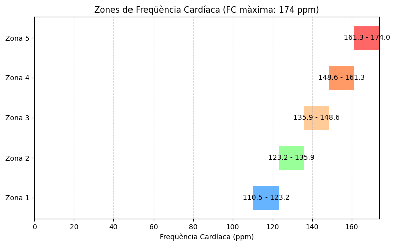

Zones freqüència
Zones de freqüència
Gràfica

Estimacions
- FC màxima estimada: 174 ppm
- FC en repòs: 47 ppm
- FC de reserva: 174 - 47 = 127 ppm
Les zones de frequència cardíaca es calculen aplicant els següents percentatges de la FC de reserva i afegint la FC en repòs:
[ \text{Zona} = \text{FC en repòs} + (\text{FC de reserva} \times \text{percentatge de la zona}) ]
Càlculs de les zones de FC
Zona 1 (Recuperació activa): 50-60% de la FC de reserva
- Inferior: ( 47 + (127 \times 0.50) = 47 + 63.5 = 110.5 ) ppm
- Superior: ( 47 + (127 \times 0.60) = 47 + 76.2 = 123.2 ) ppm
- Zona 1: 110.5 - 123.2 ppm
Zona 2 (Resistència aeròbica): 60-70% de la FC de reserva
- Inferior: ( 47 + (127 \times 0.60) = 47 + 76.2 = 123.2 ) ppm
- Superior: ( 47 + (127 \times 0.70) = 47 + 88.9 = 135.9 ) ppm
- Zona 2: 123.2 - 135.9 ppm
Zona 3 (Resistència intensa): 70-80% de la FC de reserva
- Inferior: ( 47 + (127 \times 0.70) = 47 + 88.9 = 135.9 ) ppm
- Superior: ( 47 + (127 \times 0.80) = 47 + 101.6 = 148.6 ) ppm
- Zona 3: 135.9 - 148.6 ppm
Zona 4 (Llindar anaeròbic): 80-90% de la FC de reserva
- Inferior: ( 47 + (127 \times 0.80) = 47 + 101.6 = 148.6 ) ppm
- Superior: ( 47 + (127 \times 0.90) = 47 + 114.3 = 161.3 ) ppm
- Zona 4: 148.6 - 161.3 ppm
Zona 5 (Esforç màxim): 90-100% de la FC de reserva
- Inferior: ( 47 + (127 \times 0.90) = 47 + 114.3 = 161.3 ) ppm
- Superior: ( 47 + (127 \times 1.00) = 47 + 127 = 174 ) ppm
- Zona 5: 161.3 - 174 ppm
Zones de FC
| Zona | % de la FC de reserva | Freq. Cardíaca (ppm) |
|---|---|---|
| Zona 1 | 50-60% | 110.5 - 123.2 ppm |
| Zona 2 | 60-70% | 123.2 - 135.9 ppm |
| Zona 3 | 70-80% | 135.9 - 148.6 ppm |
| Zona 4 | 80-90% | 148.6 - 161.3 ppm |
| Zona 5 | 90-100% | 161.3 - 174 ppm |